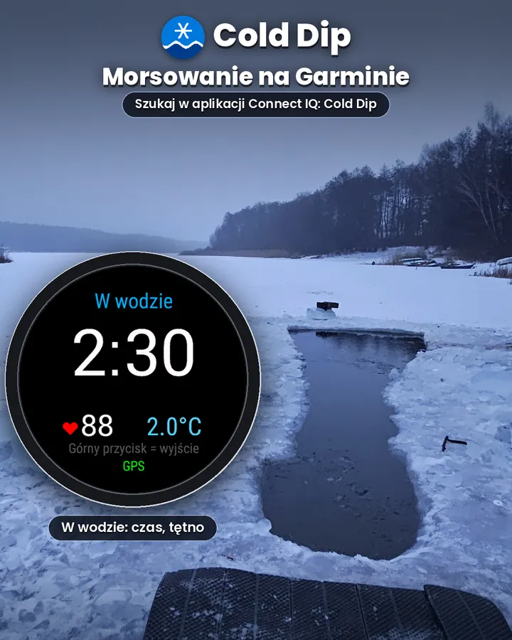
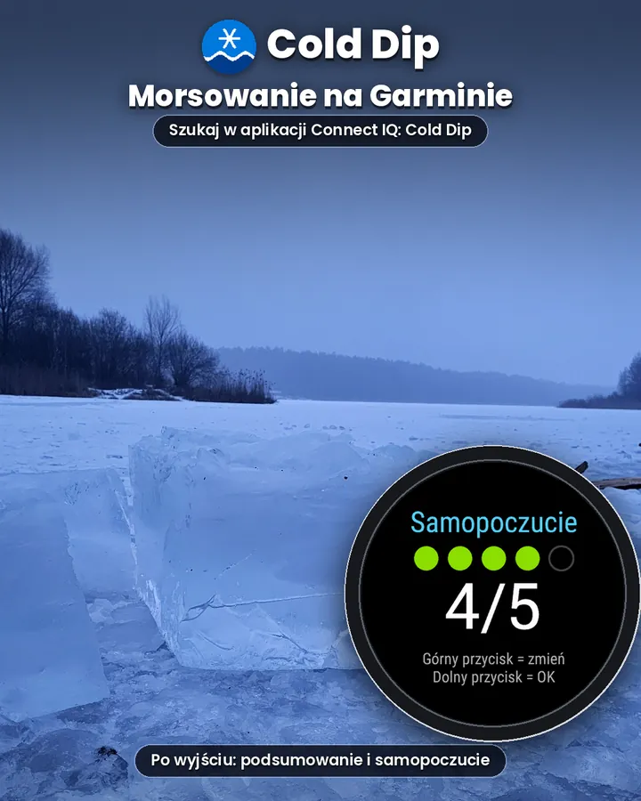
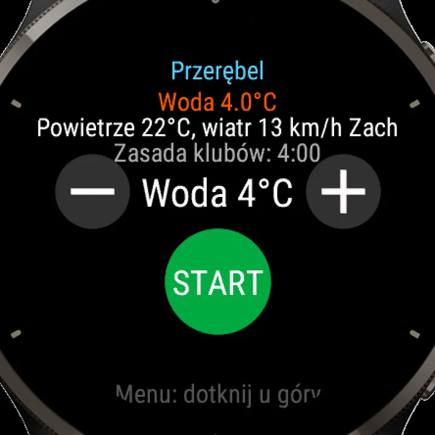
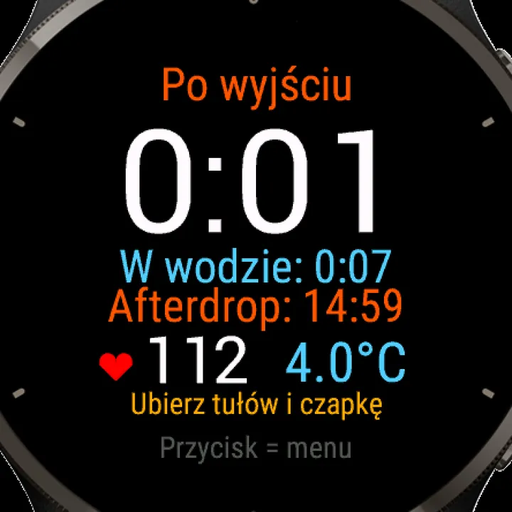
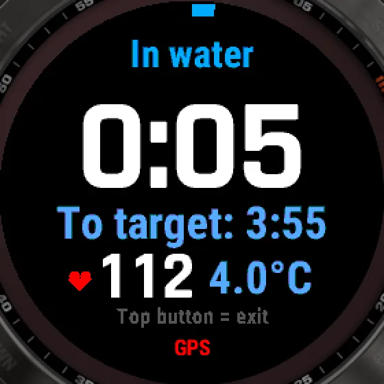
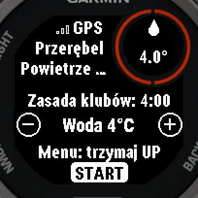
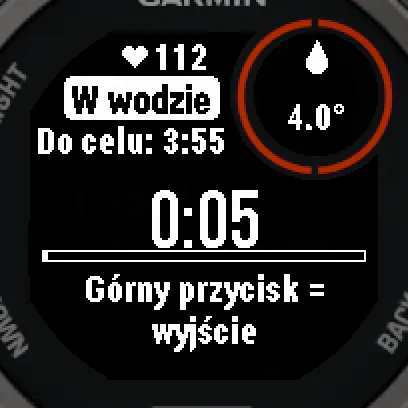
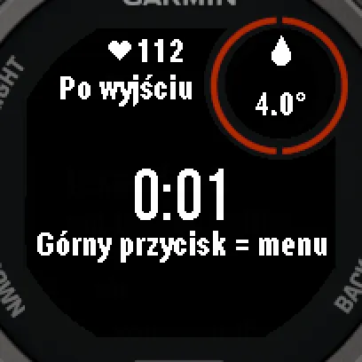
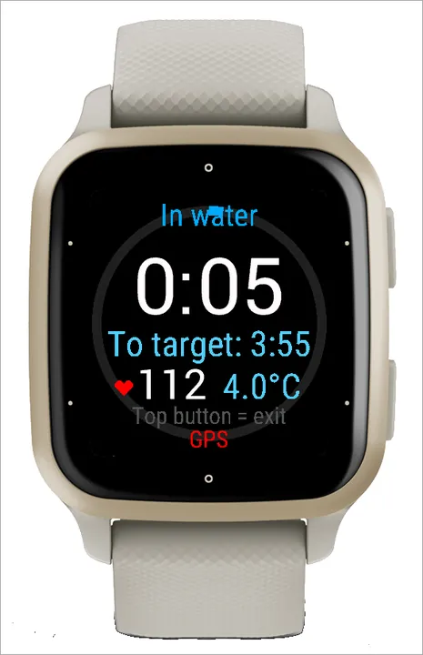

Przed wejściem / w wodzie / po wyjściu
Górny przycisk przełącza etapy. Czas w wodzie po prostu leci — aplikacja nigdy nie każe Ci wychodzić. To Twoja decyzja. Ostatni czas jest tylko punktem odniesienia, nie celem do pobicia.
Na zegarku aplikacja nazywa się Morsowanie.
Morsowanie i zimne kąpiele zapisane jak należy — nie jako pływanie.
Albo wyszukaj „Cold Dip” w aplikacji Connect IQ w telefonie.



Zrobiona pod morsowanie, nie pod basen. Ty cały czas decydujesz.
Górny przycisk przełącza etapy. Czas w wodzie po prostu leci — aplikacja nigdy nie każe Ci wychodzić. To Twoja decyzja. Ostatni czas jest tylko punktem odniesienia, nie celem do pobicia.
Tętno jest zapisywane przez cały czas. Temperaturę wody wpisujesz ręcznie — zostaje w zapisie aktywności.
Temperatura powietrza, temperatura odczuwalna i wiatr — z pogody Garmin w telefonie.
Miejsce wejścia zapisuje się i widać je na mapie w Garmin Connect.
Po każdym wejściu krótka ocena samopoczucia. Dodatkowo szczyt i regeneracja tętna oraz Body Battery i stres przed wejściem.
Wszystko zapisuje się w Garmin Connect jako osobna aktywność, nie jako pływanie.
Angielski, polski, niemiecki, czeski, słowacki, fiński, norweski, szwedzki, hiszpański, rosyjski i ukraiński. Aplikacja sama przełącza się na język zegarka.
Forerunner, Fenix, Epix, Enduro, Venu, Vivoactive, Instinct 2 / 3 / E / Crossover i inne. Nie działa na bardzo starych modelach, takich jak Forerunner 920XT (Connect IQ 1.x).
Wpisz model. Lista zgadza się ze 133 zegarkami w Cold Dip 1.0.3.
Bardzo starych zegarków z Connect IQ 1.x, takich jak Forerunner 920XT, nie da się obsłużyć.
Tak Cold Dip wygląda na różnych ekranach Garmin.












Ostatnie wersje Cold Dip.
133 zegarki, w tym Instinct 2, Instinct 2S, Instinct 2X, Instinct 3 Solar, Instinct E i Instinct Crossover, oraz nowy czarno-biały układ na ekrany MIP.
126 zegarków, w tym Forerunner 55.
105 zegarków, w tym prostokątne układy dla Venu X1 i Venu Sq 2.
Pierwsza publikacja.
“Działa idealnie”
Ponad 10 minut w 5°C — temperatura wody na zegarku, a wszystkie dane zapisane w Garmin Connect.
Kilka rzeczy, o które ludzie pytają najczęściej po instalacji.
Zainstaluj ją w aplikacji Connect IQ Store w telefonie — nie w Google Play ani w App Store. Na zegarku znajdziesz Cold Dip (Morsowanie) na liście aktywności / aplikacji.
W profilu „Przerębel” ustawiasz ją przyciskami − / + na ekranie startowym. W pozostałych profilach z menu: „Temp. wody ręcznie”. Jeśli w wodzie widzisz „--°C”, temperatura nie została jeszcze ustawiona.
Otwórz aktywność, wejdź w zakładkę „Statystyki” i przewiń w dół do sekcji „Connect IQ”. Tam są tętno, temperatura wody, pogoda, samopoczucie i czasy etapów. Kafelki na ekranie „Przegląd” ustawia sam Garmin — aplikacja nie może ich zmienić.
Nie. Zegarek nie zmierzy temperatury ciała. Czujnik pokazuje temperaturę samego zegarka, na którą wpływa skóra i powietrze. W Cold Dip temperaturę wody wpisujesz ręcznie.
Kalorie szacuje sam zegarek na podstawie tętna, nie liczy ich Cold Dip.
Zimna woda to poważna sprawa. To ogólne przypomnienia o bezpieczeństwie, nie porada medyczna. Ty decydujesz, kiedy wejść i kiedy wyjść.
Zawsze idź z kimś, kto może pomóc, gdyby coś się stało, albo upewnij się, że ktoś na brzegu Cię obserwuje.
Jeśli dopiero zaczynasz morsowanie, oswajaj się z zimnem stopniowo, zamiast od razu zostawać długo w bardzo zimnej wodzie.
Wiele osób zaczyna od krótkiego czasu w wodzie i dopiero potem go wydłuża. Nie ma czasu, w którym „trzeba” wytrzymać.
Wyjdź z wody, gdy tylko czujesz, że trzeba — przy silnym dreszczu, bólu, drętwieniu, dezorientacji albo po prostu gdy masz dość. Cold Dip nigdy nie każe wychodzić i nie stawia czasu do pobicia. Ostatni wynik jest tylko punktem odniesienia.
Jak najszybciej wytrzyj się i ogrzej po wyjściu z wody. Ciepłe ubranie miej gotowe jeszcze przed wejściem.
Po wyjściu temperatura wewnątrz ciała może jeszcze przez jakiś czas spadać, gdy zimniejsza krew wraca ze skóry i kończyn. To często nazywa się afterdrop. Dalej się ogrzewaj, nie spiesz się i poczekaj, aż naprawdę poczujesz się dobrze, zanim wsiądziesz do samochodu albo na rower.
Cold Dip jest aplikacją do zapisu aktywności, nie wyrobem medycznym i nie udziela porad medycznych. Nie powie Ci, czy wejście do zimnej wody jest dla Ciebie bezpieczne. Jeśli masz schorzenie, jesteś w ciąży albo masz wątpliwości, najpierw porozmawiaj z wykwalifikowaną osobą.
Krótko, jedno wejście: od ekranu startowego po zapis w Garmin Connect.
Masz pomysł na aplikację lub tarczę Garmin? Zróbmy to razem. Napisz i podaj, jakiego zegarka używasz.
Jeśli już korzystasz z Cold Dip, ocena w Connect IQ bardzo pomoże — dziękuję!
Cold Dip jest darmowy. Jeśli pomaga w morsowaniu, możesz wesprzeć pracę nad nim.
Postaw mi kawę